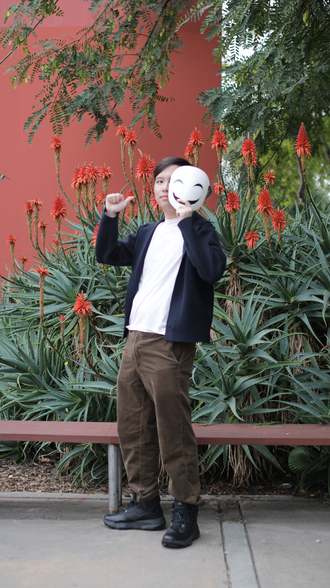
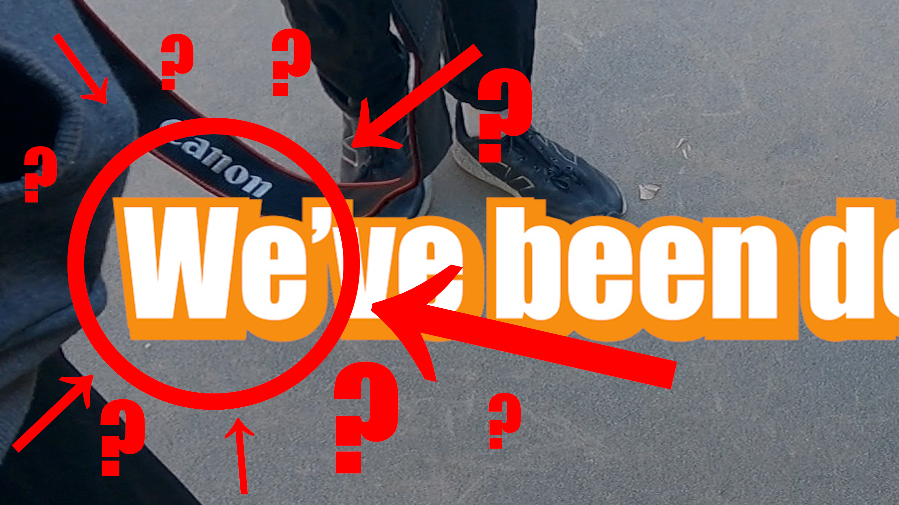
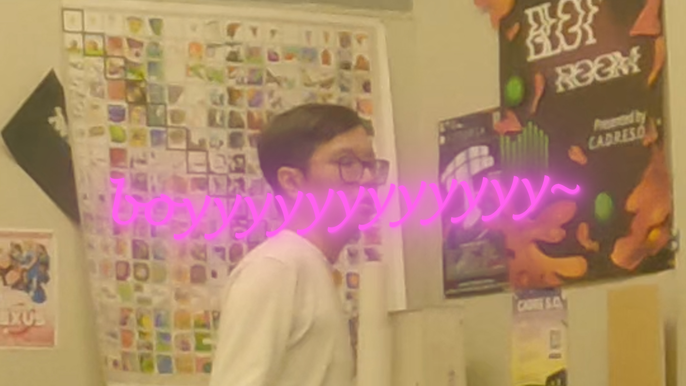

THIERRY "ParadX" TRAN
( HE/HIM )
YouTube (Personal): @thesmilingparadx
YouTube (Art): @PRDXtheArtist
LinkedIn: LINK
Portfolio: LINK
About the Artist
Thierry Tran (b. October 20, 2003) is a Vietnamese-American digital artist and aspiring content creator from the Bay Area—born and raised, he is—and will soon graduate with a Bachelor's in Fine Arts (BFA) with a concentration in Digital Media Art (DMA) at San Jose State University (SJSU). Always known his life to be creatively influenced by media he had read, watched, and played, art gives him a way to turn those experiences into something new that he can call his own. Inspired by video games and the works of Shotaro Ishinomori, he seeks to create artworks that rely on the concept of masks, identity, and self-development. Over the years, Tran has found that his interests and focus are in digital character illustration, net art/web design, and, now primarily, videography. His skills lie in Clip Studio Paint, Blender, Adobe Premiere Pro, Adobe After Effects, and a few others. While he is comfortable with using his real name, Tran most often prefers to go by his pseudonym and online username: TheSmilingParadX, or simply ParadX—pronounced as “paradox.”
Do not turn off this life when you see me...
As someone seeking to improve his skills in video editing, "Do not turn this life off when you see me…" is both a long-winded practice session and a video log series that follows a segment of my life, detailing what goes on in a finalizing chapter of my journey as an aspiring artist while using other mediums to substitute some footage. I am inspired by many content creators' works and their abilities to make a single moment an amazing work of art (no pun intended). It is my unspoken message to everyone I have met and anyone I have not on why this is the path I wish to take in my life. With that said, sit back, relax, and enjoy what I have to show you. Who knows, you may get to hear from me in there.


